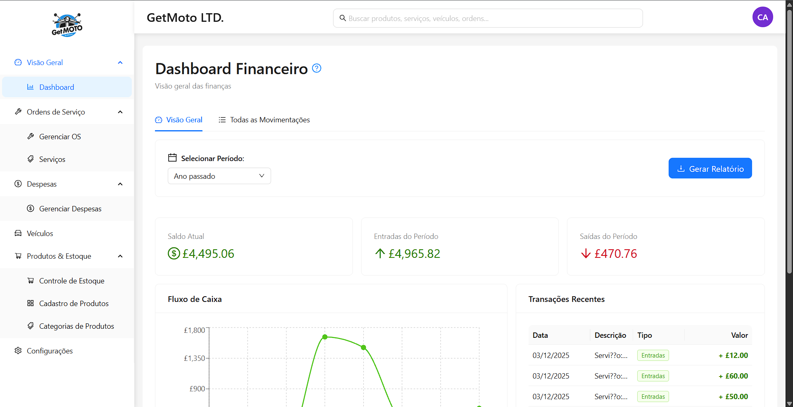
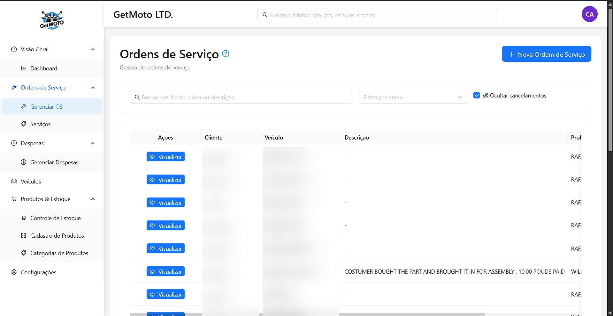
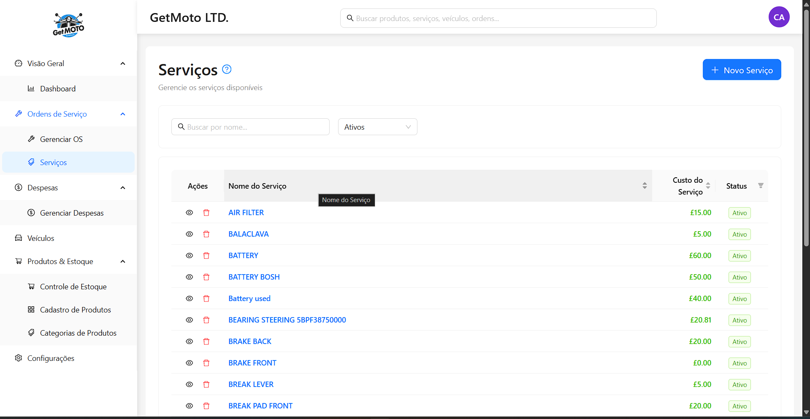
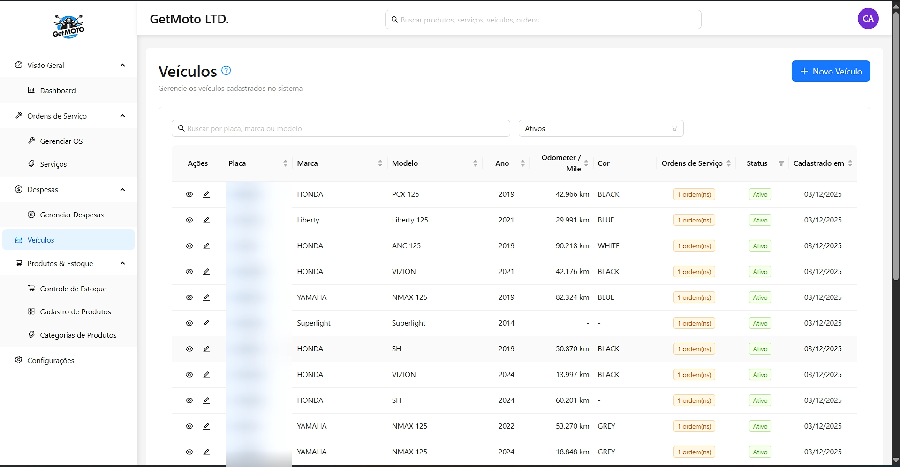
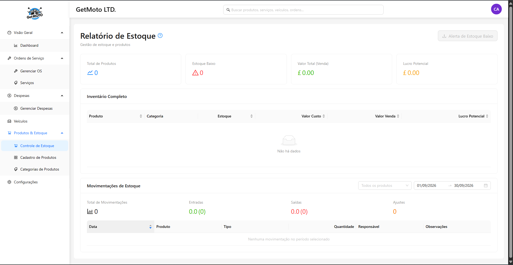

O problema
A oficina controlava ordem de serviço, estoque e folha em lugares separados — e nenhum deles conversava com o caixa. Não dava para saber quanto uma OS deixou de margem depois da peça consumida, nem quanto o mês fechou de verdade depois de pagar fornecedor, despesa e funcionário.
O que foi construído
- Ordem de serviço que soma peça e mão de obra, baixa o estoque e lança o caixa na mesma operação
- Livro-caixa único que recebe venda, compra, despesa, folha e vale — cada lançamento sabe de onde veio
- Folha de pagamento com ponto, hora extra, bônus, desconto e vale deduzido automaticamente
- Estorno por lançamento reverso: cancelar não apaga, cria o contrário e mantém os dois lados no histórico
- Estoque com movimentação automática, ajuste manual e alerta de mínimo
- Interface em português, inglês e espanhol, com valores em libra
Módulos
Dezenove módulos, da abertura da OS ao holerite do mecânico.
Oficina
- Veículos e histórico por moto
- Ordens de serviço com desconto
- Catálogo de serviços e categorias
- Produtos e categorias
- Relatório de OS por período
- Busca global
Estoque e compras
- Movimentações automáticas
- Ajuste manual sem tocar no caixa
- Alerta de estoque mínimo
- Ordens de compra a fornecedor
- Relatório de posição
Financeiro
- Livro-caixa central
- Despesas operacionais
- Resumo por categoria
- Dashboard com gráficos
- Relatório em PDF
Pessoas
- Cadastro de funcionários
- Registro de ponto
- Folha de pagamento e holerite
- Adiantamentos e vales
- Usuários e papéis de acesso
Arquitetura
- Backend em camadas rota → controller → service → Prisma, com validação Zod e tratamento central de erro que distingue erro de domínio, de schema e código do Prisma
- Toda operação que toca mais de uma tabela — OS mais estoque mais caixa, folha mais vale mais ponto — roda dentro de uma transação
- Soft delete e trilha de auditoria (quem criou, quem cancelou, por quê) nas entidades financeiras
- Estorno por registro reverso vinculado, nunca por edição do lançamento original
- Frontend com rota protegida por papel, code-splitting por tela, sessão em Zustand e dados de servidor em TanStack Query
- Cliente de API gerado por Orval a partir do Swagger do backend — os tipos do frontend vêm do contrato, não de cópia manual
- Access token em memória do navegador e refresh em cookie HttpOnly, com fila de requisições concorrentes durante a renovação
- Docker multi-stage com usuário não-root, imagem no GHCR e frontend na Vercel com CSP e HSTS
Integrações
Sistemas externos com que o produto conversa.
- PostgreSQL
- Swagger / OpenAPI
- Orval
- Docker
- GHCR
- Vercel
- Winston
- pdfmake
Desafios técnicos
Folha de pagamento não aceita centavo errado
Hora trabalhada vezes valor-hora precisa dar um número exato, e ponto flutuante acumula erro justamente aí. Todo valor monetário é pence em BigInt, do schema até o service: as horas viram base inteira antes de multiplicar pela taxa, e a divisão só acontece no fim. Nenhum cálculo intermediário passa por float.
Cancelar sem apagar
Cancelar uma OS, uma compra ou uma folha não pode apagar o lançamento — isso quebraria o histórico do caixa — mas também não pode deixar o efeito financeiro de pé. A saída foi o lançamento reverso: um registro de direção invertida, marcado como estorno e ligado ao original, com estoque e saldo devolvidos por operação atômica. O relatório continua mostrando os dois lados.
Quatro escritas que precisam valer ou falhar juntas
Abrir uma ordem de serviço valida o desconto, debita o estoque de cada peça, registra o movimento e lança o caixa. Se a terceira peça não tiver saldo, as duas primeiras não podem ter saído. Tudo roda numa transação única, com decremento atômico de estoque para que duas OS simultâneas não vendam a mesma peça.
Dois períodos de folha que se encostam
Dois intervalos de pagamento podem se sobrepor de quatro jeitos — começar dentro do outro, terminar dentro, conter o outro inteiro ou ser idênticos. A checagem é feita por três condições equivalentes à intersecção de intervalos, escritas nessa forma porque o Prisma as traduz melhor que a fórmula direta; o porquê está comentado no código, ao lado.
Telas
Prints do sistema em funcionamento.




